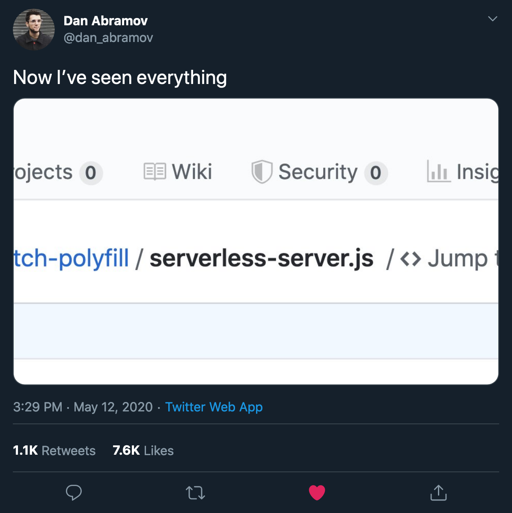
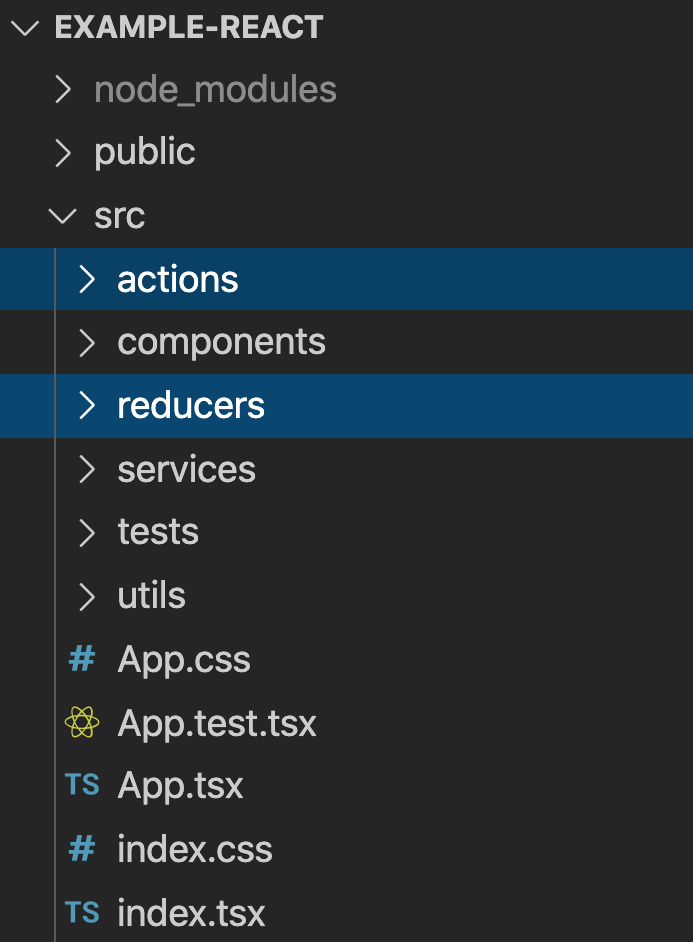
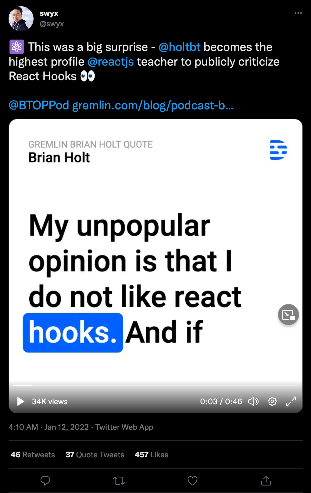
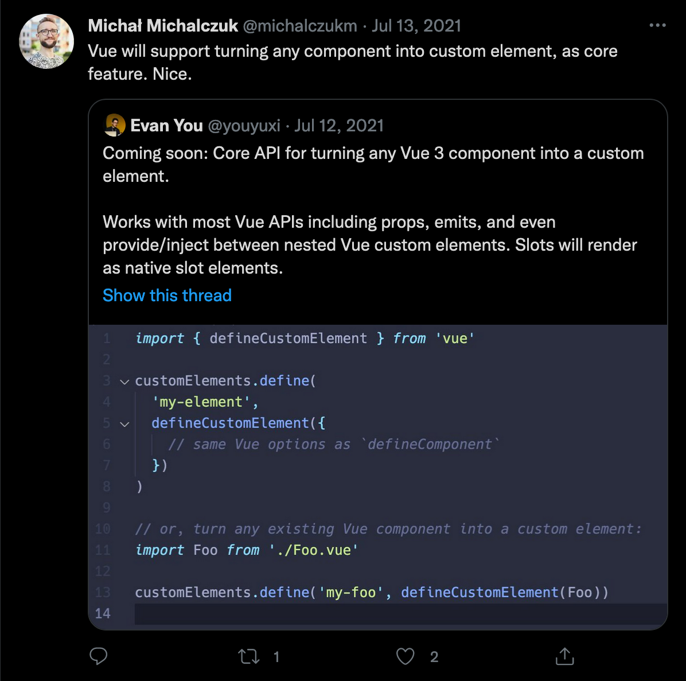
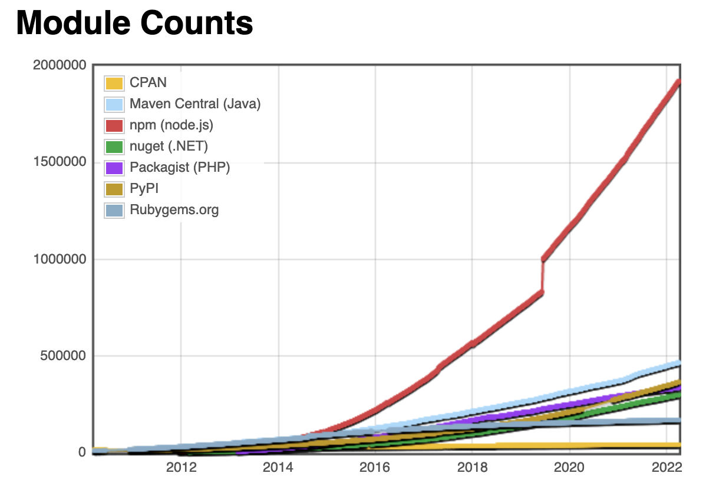
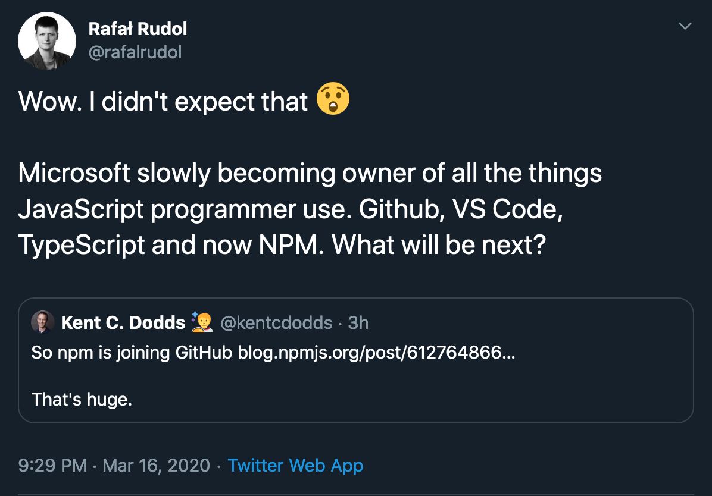
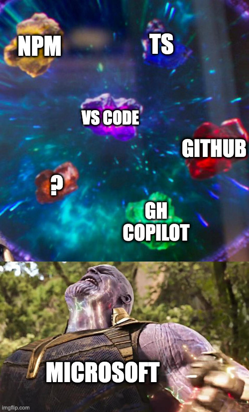
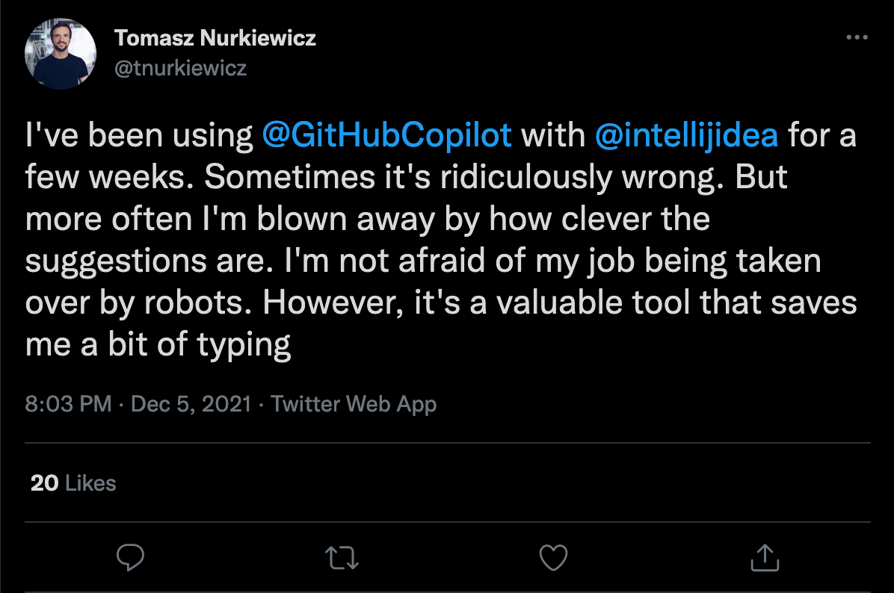

Subiektywny
przegląd front-endów (2022)
Perspektywa... ma znaczenie :)


tiobe.com/tiobe-index
insights.stackoverflow.com/survey/2021
JS > front-end
- PWA/TWA
- WebAssembly
- Aplikacje desktopowe z Electronem
- Alexa skills, Google
- Lambda@Edge, ogólnie FaaS, Serverless

Node.js/Chromium
- Stabilnie - lider
- 16, LTS
- Wielowątkowość
- Fun fact: JS kosmosie
| kiedyś | teraz |


|


|


bestofjs.org/projects?sort=total
thoughtworks.com/radar v26




- TS
- Nowe repo
2 MILIONY
1000+ nowych dziennie
Micro-frameworki
left-pad w
2016?
2019
Neverending
story...


npm is joining GitHub
 2018


2022
- github.new
.- VS Code online- GitHub bot
- npm 
Trendy
- Coraz mocniejsze narzędzia rozumiane i wykorzystywane w pełni przez coraz mniej programistów
- Naturalna kolej rzeczy?
-  - code splitting, lazy loading, ...
 - różne sztuczki
zamiast monorepo
- różne sztuczki
zamiast monorepo - goni Yarna
- goni Yarna-
Package.json - coraz więcej konfiguracji
- Browserlist,
 ,
TS
,
TS
- Browserlist,
- Przeglądarki - coraz bliżej systemów operacyjnych